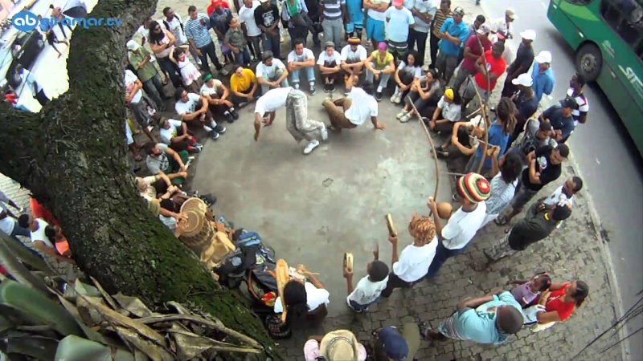

Roda de capoeira (круг капоэйры)
В период колониальной Бразилии капоэйра была формой социализации порабощенных африканцев и способом почувствовать свое единство. Она позволяла им справляться с жестокостью угнетающего режима, а круг капоэйры был не просто местом, где «происходила» капоэйра, но был особой формой ее выражения:
- как празднества, позволяющего почтить старших, поприветствовать молодых, спеть о жизненных ситуациях и отпраздновать особенные даты;
- как игры, полной импровизации и находчивости, требующей большой сноровки, знания ритуалов и этических норм;
- как способа обучения, в котором, посредством наблюдения и подражания ученики развивают свои навыки и знания;
- как формы сопротивления, позволяющей сохранять связи сопричастности, общности, в ответ на давление тоталитарной системы.Круг капоэйры – это форма выражения капоэйры, сформировавшаяся в процессе ее адаптации к различным социальным и культурным контекстам. Со временем, внесенные новшества и изменения, отчасти трансформировали круг капоэйры в практику, известную и широко распространенную в наши дни: круг капоэйры можно найти не только во всех субъектах Бразилии, но и на всех континентах, более чем в 160 странах мира.
Традиционно, круг капоэйры образуется группой людей, включая мастера (mestre) и студентов, которые поют и хлопают в ладоши, играют на перкуссионных музыкальных инструментах (berimbau, pandeiro, agogô, caxixi, atabaque, reco-reco), а в центре происходит игра постоянно меняющихся пар капоэйристов.
Мастер обычно играет на главном беримбау, он ведет игру посредством ритма и пения, он разрешает входить в игру, проводит посвящения и прочие ритуалы. Но мастер не только поддерживает организацию круга и сплоченность группы, но также, являясь носителем культуры, служит примером для подражания: он передает арсенал движений капоэйры и свои знания относительно игры на музыкальных инструментах, относительно ритуалов, космологии, иерархии, генеалогии, социальной памяти, этических норм и правил.
Естественно, что ответственность за передачу знаний и ценностей этого наследия целиком и полностью лежит на мастере. В зависимости от стиля и группы, мастер использует различные средства и методы обучения. Однако основным и наиболее важным способом передачи знаний в капоэйре является круг.
Таким образом, не столько сама капоэйра, сколько круг капоэйры, был и является чрезвычайно важной практикой в афро-бразильской культуре, в которой, через музыку, песни и движения, выражаются и передаются традиции, символы и ценности африканской диаспоры, как на территории Бразилии, так и за ее пределами.